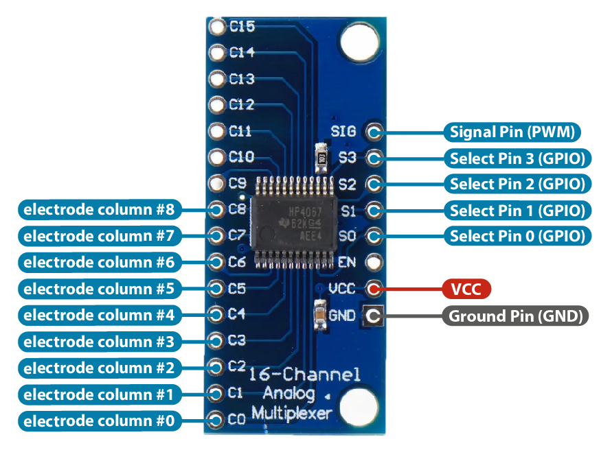

6.810 Engineering Interactive Technologies (fall 2021)
Pset2: Assembling the Multi-Touch Pad and Circuit
In this problem set, you will print out your multi-touch pad on the conductive inkjet printer and assemble the top and bottom layer together. After this, you will build the touch sensing circuit and connect your multi-touch pad to it. As part of building the circuit, you will also have to solder some of the components with header pins first. At the end of this problem set, you will download a piece of test code that will verify that you assembled your multi-touch pad and the corresponding circuit correctly, i.e. the test code will verify that your hardware can sense touch data from a user's finger.
Steps:
- Inkjet Print and Assemble Top and Bottom Electrode Layers
- Connect the FPC Connectors to the Electrodes
- Build the Sending Circuit
- Build the Receiving Circuit
Ask a TA to give you the fabrication files (.pdfs) if something went wrong in pset1
In case you did not finish pset1, you can ask a TA to provide you with the fabrication files (i.e., the two pdfs for the top and bottom electrode layer) so you can continue pset2. If you finished pset1, but upon review by the teaching team it turns out that your fabrication files have a problem that cannot be easily fixed, you can also ask a TA to give you the fabrication files.
(1) Inkjet Print and Assemble Top and Bottom Electrode Layers
Inkjet Print: Once the TAs have verified the two fabrication files (.pdfs) you generated in pset1, you can print them out. Ask a TA to give you the two transparent sheets (one for the columns and one for the rows) you need for printing.
If you don't remember how to print, you can find information here (add link).
Assemble: To assemble both sheets together, please ask a TA to help you with this either in lab or in an OH.
Conductive side should face upwards: First, check that both of your sheets have the conductive side facing upwards.
Align both electrode sheets: Next, align both electrode sheets on top of each other.
The alignment between the top and bottom electrodes is critical for receiving an accurate sensing signal.
Attach tape to maintain alignment: To help maintain the relative alignment, we will tape the two sheets together on one side using regular scotch tape.
Flip top sheet over: Flip the top layer up, so that the bottom layer is exposed and we can apply glue in the next step.

Glueing with tape vs. tattoo transfer paper: While you could use simple double-sided transparent tape for glueing the sheets together, the tape has a certain thickness to it. This is a problem because more space between the electrode layers results in worse sensing. The electrodes are already spaced out by the thickness of the sheet on which the electrodes were printed, so the tape would add even more thickness to it. To keep the glue layer as thin as possible, you will instead use the adhesive of temporary transfer paper.
Using the tattoo transfer paper to glue top and bottom sheet together: Ask a TA to give you the tattoo transfer paper and help you with this step. Pull off the protective cover from one side of the tattoo transfer paper, then attach the now exposed sticky side of the tattoo transfer paper to the bottom electrode sheet to cover all the electrodes (no need to cover the wires). Next, remove the second protective cover from the other side of the tattoo transfer paper to reveal the second sticky side. Now flip back the top electrode layer to make everything sticks together (check your electrode alignment one more time before you do this).

Protecting the top sheet with a transparent cover: Finally, since the conductive side of the top sheet is facing towards the user, the top electrodes are still exposed and you need to cover them up to prevent the user from touching them directly. For this, you will add a transparent film on top, which we will also give you in lab/at the OH. You can attach the transparent sheet by using scotch tape again.
Laminating the Multi-touch pad: to come once we figured out the lamination step. this may also replace the top cover step from above. to come once we figured out the lamination step. this may also replace the top cover step from above. to come once we figured out the lamination step. this may also replace the top cover step from above.
(2) Connect the FPC Connectors to Electrodes
Once you have the multi-touch pad printed and assembled, you need to connect its inkjet printed wires to a breadboard so it can work with the rest of the circuit.
FPC connectors: In the labs, we used crocodile clamps to connect our inkjet printed circuit to a breadboard but for the multi-touch pad, the wire spacing is so tight that crocodile clamps will not work here. A component that is more suitable for our purposes is a Flexible Printed Circuit (FPC) Connector. The FPC connector has high resolution connectors on one side, which we will use to connect to the inkjet printed circuit, and on the other side has more widely spaced connectors, which we can use to connect to our breadboard. We bought these FPC connectors here.
Soldering header pins onto the FPC connectors: You have two FPC connectors, one for the top and one for the bottom electrodes. Since they don't have the header pins on them yet, you need to solder them on yourself. You have some header pins in your fabrication bag for this.
Add a note and photos for how to correctly solder to keep the pins straight by inserting into breadboard.


Testing if each pin on your FPC chip is soldered: How can the students test if each pin on the FPC connector is correctly soldered, i.e. makes a connection to the header pin?
Cut out area around multi-touch wires for FPC connection: The multi-touch pad wires will need to fit into the FPC connector. Thus, you need to cut out some free space around the wires on your multi-touch pad. When you cut out the area for the connector pay extra attention that it will fit inside the FPC connector. Check that the little pins inside the FPC connector head align with the wires of your multi-touch pad.

Connecting the FPC connectors to the wires of the multi-touch pad: When you connect your FPC connector, make sure the conductive side with the silver traces is facing towards the breakout board. Pull out the little tab on the FPC connector, then insert the wires, then push the little tab back in to secure the wires. Once you are done connecting one side of the multi-touch pad, repeat the procedure with the other side and connect it to the second FPC connector.

Testing if your FPC chip make a connection to each wire from the multi-touch pad: How can the students test if the FPC connector is correctly connected to the multi-touch pad wires? can they use a multimeter and probe on the chip + on the circuit?
Disconnecting/Reconnecting Multi-Touch pad from Circuit: Add a section on how to properly disconnect the FPC connectors if needed. Last year students unclipped the multi-touch pad at the front, but it would be better to remove the wires. We should show a photo here with correct/incorrect (maybe this should be further down in the sending circuit section?)
(3) Build Sending Circuit
Use the large breadboard we gave you for the multi-touch pad circuit:
For building the circuit, please use the large breadboard we gave you. The idea is that you use the large breadboard for your multi-touch pad and the small breadboards you received earlier for the labs. This way, you don't have to unplug any wires when you switch between working on labs vs. working on psets.
As mentioned in lecture, the multitouch pad consists of sender electrodes (e.g., columns) and receiver electrodes (e.g., rows). A signal is injected into the sender electrodes and the receiver electrodes then pick up the signal and any modulation of it that occured because the user's finger is present. We will first build the sending circuit.
Injecting Circuit: The sending circuit injects a PWM signal into the sender electrodes. When powered, the multitouch pad is sending the PWM signal to the sender electrode columns one by one, i.e. first sends the PWM signal to the first sender electrode column, then the second, then the third and so on. After it reached the last sender electrode column, it continues again from the front.
Number of Sender Pins: Since we need to send a PWM signal to each column of electrodes individually one after another, sharing a single PWM sender pin like we did in lab does not work since it would send a signal to all electrodes simultaenously at the same time. To send a PWM signal one by one to each column, we thus need the same number of sender pins as we have columns. While we have enough GPIO/PWM pins on the ESP for our 8x9 multi-touch pad (i.e. 17 in total, 8 for receiving and 9 for sending), we would quickly run out of pins if we used a multi-touch pad with a higher resolution. We thus want to introduce a new component, i.e. a multiplexer, that allows you to scale up the number of pins you have available by reducing the number of ESP pins needed to send the signals.

Using a Multiplexer to Scale up the Number of Sender Pins: A multiplexer can take one single input and direct it to multiple outputs (de-multiplexing). Thus, for sending, we can use a single pin on the ESP to generate the PWM signal and then pipe the signal through the multiplexer, which can direct it to the individual electrode column where the signal should be applied. We bought the following multiplexer from here. You can find the datasheet here and the schematic file here.

Soldering header pins onto the multiplexer: The multiplexer we bought has no header pins attached yet, so you need to solder them on yourself. You have some header pins in your fabrication bag. After you are done soldering, it should look like this.
Testing if each pin on your multiplexer is soldered: How can the students test if each pin on the multiplexer is correctly soldered, i.e. makes a connection to the header pin?
Providing the Input Signal from the ESP (SIG): First, let's start by providing our multiplexer with the input signal from the ESP. For this, connect the signal pin (SIG) on the multiplexer to one of the pins on the ESP that can generate a PWM signal (any GPIO pin works).
Connecting the output channels to the electrode columns (C0-C8): If you look at your multiplexer, you can see that it has 16 output channels (pins on the left side from C0-C15). We want to connect each output channel to one column of our multi-touch pad (we don't need all 16 channels since our multi-touch pad only had 9 columns). We can then use the multiplexer to redirect the input signal from the SIG pin to one of the channels, thereby injecting the signal into a specific column of the multi-touch pad. Connect each of your electrode colunmns to one of the pins. You can connect the FPC connector breakout boards to the multiplexer via male-to-female jumper wires and a breadboard.
add an image of the FPC chip with jumper wires?
Selecting which Channel to send the Signal to (S0-S3): The question remains how to we tell the multiplexer which channel our input signal should be directed to, i.e. how can we tell the multiplexer to send the input signal to e.g., the C12 output pin. The way our multiplexer does this is by asking us to send the desired output address using the four pins on the right side, labeled S0-S3. Why four pins? The multiplexer expects a binary signal, e.g. sending 0,0,0,0 to S0-S3 results in the output pin C0, vs. 0,1,1,0 send to to S0-S3 results in C6 as output pin. Thus, by using the multiplexer we can send a signal to up to 16 electrode columns (CH0-15) using only 5 pins (SIG + S0,S1,S2,S3) on the ESP! Wire up the S0-S3 pins to GPIO pins on the ESP.
Powering the Multiplexer: Finally, connect the power VCC and GND pins on the multiplexer to the corresponding pins on the ESP to power the multiplexer.

anything students can test here to see if they wired everything up correctly or do we do this at the very end?
(4) Build Receiving Circuit
As you can see in the schematic, the circuit for receiving is very similar to what we have done in lab. Each touch-sensing row is connected to its own resistor and then connected to an ADC/TOUCH pin on the microcontroller.

Using a separate ADC component: Unfortunately, the ADC/TOUCH pins on the ESP32 are not reliable enough for our purposes, i.e. they do not output clean enough signals for our multi-touch pad (footnote 1). We will thus use a separate ADC component that will replace the ADC pins on the ESP32. The component we use to have better ADC channels is the MCP3008 chip and you can find its datasheet here.

Connecting the Receiving Electrodes to the ADC component: Let's first connect the receiving electrodes from our multi-touch pad to the ADC component by connecting them to channel CH0 - CH7 (see component image below). Don't forget to add the 100kOhm resistor to each electrode row.
Powering the ADC component: Next, power the ADC component by connecting the Vdd pin to 3.3V and the Dgnd pin to GND.
Reference Signal: The MCP3008 chip also needs a reference voltage to calculate the unknown voltage from the incoming CH0-7 pins (ADC conversion). This reference voltage needs to be equal or less than the operating voltage of the ADC component. Since we use 3.3V on Vdd, you can connect the reference voltage pin VRef pin to 3.3V as well and then connect the AGND pin to ground.


Connecting the ADC component to the ESP: Sending data from the ADC component to the ESP is a little more complicated. The MCP3008 chip communicates with the ESP via the Serial Peripheral Interface (SPI). We use basic SPI between one master (ESP) and one slave (MCP3008 chip). SPI communication is setup via 4 types of pins, i.e. MOSI is the line for the master to send data to the slave, MISO is the line for the slave to send data to the master, SCK is the line for the clock signal that determines how fast bits of data can be send, and NSS/CS is a line for the master to select which slave to send data to. The ADC chip uses different names on its pinout for these pins, i.e. MOSI (DIn), MISO (DOut), SCK (CLK), and NSS/CS (CS/SHDN) as shown above in the MPC chip pinout. The ESP uses the regular names as shown on the ESP pinout below. Wire up these four SPI pins between the ADC chip and the ESP.

Using a Multiplexer for the receiving circuit: While we will not do it in this pset, we could also use a second multiplexer to reduce the number of pins required for the receiving circuit, i.e. the electrode rows. When using the multiplexer for receiving, we would redirect the received signal on CH0-15 to the SIG pin that is then read by the ESP. Similar to above, we would only have to specify which channel (CH0-15) we want to read and the ESP would then retrieve the signal from the respective channel. Thus, this second multiplexer would reduce the number of receiver pins by combining multiple rows into one pin on the ESP.
How can the student test that everything works?
Upload your Code and Design Files, Show Hardware to TA
For grading, please upload the following to your google drive student folder:
- the .pde file of your Processing program
- the two .pdf files you used for conductive inkjet printing
- 3-5 photos showing your assembled circuit from different perspectives (include top view + side views)
Grading
We will give 20 pts in total:
- did you finish assembling your multi-touch pad, i.e. did you inkjet print both the top and bottom electrode layer, glued them together, and connected the FPC chips? (5 pts)
- did you correctly build the multi-touch sensing circuit using the multiplexer, resistors and ESP? (5 pts)
In case you did not finish pset1, you can ask a TA to provide you with the fabrication files (i.e., the two pdfs for the top and bottom electrode layer) so you can continue pset2. If you finished pset1, but upon review by the teaching team it turns out that your fabrication files have a problem that cannot be easily fixed, you can also ask a TA to give you the fabrication files.
For building the circuit, please use the large breadboard we gave you. The idea is that you use the large breadboard for your multi-touch pad and the small breadboards you received earlier for the labs. This way, you don't have to unplug any wires when you switch between working on labs vs. working on psets.